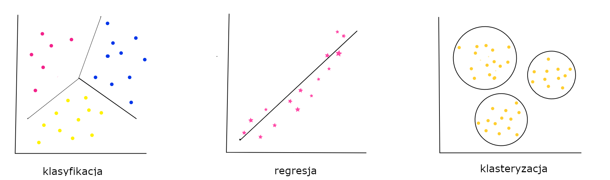
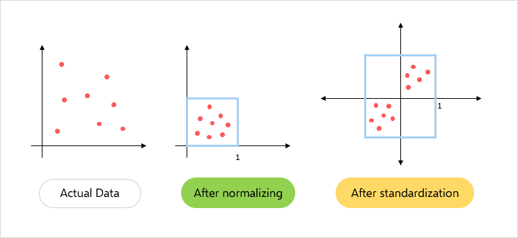

L5: Tworzenie modeli uczenia maszynowego¶
Wprowadzenie do uczenia maszynowego¶
Uczenie maszynowe (ang. machine learning) jest obecnie najpopularniejszą dziedziną sztucznej inteligencji.
Polega ono na automatycznej budowie modelu poprzez ekspozycję algorytmu na dane treningowe w procesie zwanym uczeniem.
Model uczenia maszynowego posiada zdolność rozpoznawania wzorców wykrytych w danych, dzięki czemu jest w stanie dokonywać predykcji.
Celem uczenia maszynowego jest tworzenie modeli zdolnych do generalizacji, tj. poprawnego predykowania na danych nie użytych do treningu.
W zależności od problemu który ma zostać rozwiązany, stosuje się różne metody i algorytmy, w szczególności:
jeśli celem jest przypisanie danym pewnej kategorycznej etykiety, mówimy o klasyfikacji - np. określenie czy na zdjęciu jest kot, czy pies
jesli celem jest umiejscowienie danych na pewnej ciągłej skali liczbowej, mówimy o regresji - np. prognozowanie wartości produktu
jeśli celem jest zgrupowanie podobnych sobie danych, mówimy o klasteryzacji - np. przypisanie użytkowników Twittera do grup w zależności od poruszanych tematów
Klasyfikacja i regresja są przykładami uczenia nadzorowanego, gdzie do treningu oprócz danych wejściowych opisujących problem, musimy też posiadać etykietę, tj. klasę lub wartość która ma być wyjściem modelu.
Klasteryzacja to przykład uczenia nienadzorowanego, gdzie model realizuje swoje zadanie bez dodatkowych informacji z naszej strony.

Uczenie maszynowe przy pomocy sklearn¶
Scikit-learn (aka sklearn) jest aktualnie najpopularniejszą biblioteką w Pythonie pozwalającą kompleksowo przeprowadzać proces machine learningowy, który zazwyczaj składa się z następujących elementów:
wczytanie zbioru danych
preprocessing zbioru:
transformacje cech (skalowanie, kodowanie, dyskretyzacja, embeddowanie, ekstrakcja cech itd)
rozwiązanie kwestii brakujących danych
rozwiązanie kwestii powtarzających się danych
rozwiązanie kwestii imbalansu klas (oversampling/undersampling)
augmentacja danych
inżynieria cech
uczenie modelu
dostosowywanie (fine-tuning) parametrów
Instalacja przebiega standardowo:
pip install scikit-learn
Wczytanie zbioru danych¶
Scikit-learn posiada wbudowany zestaw standardowych, benchmarkowych zbiorów danych - jak np. używany w przykładzie zbiór wine. Pozwala także w prosty sposób generować syntetyczne dane.
Więcej informacji o dostępnych w bibliotece zbiorach danych tutaj
import pandas as pd
dataset = pd.read_csv(
"../docs/lab3/wine_with_nulls.csv",
)
x = dataset.drop(columns=["target"])
y = dataset["target"]
Trzymając się przyjętej konwencji matematycznej, zbiór danych wejściowych nazywamy x, natomiast wyjściowych - y
Preprocessing zbioru danych¶
Odpowiednie przygotowanie danych uczących jest kluczem do sukcesu każdego przedsięwzięcia machine learningu - w myśl zasady Garbage in, garbage out. Przed przystąpieniem do uczenia, zazwyczaj konieczne jest wykonanie co najmniej kilku kroków wstępnego przetwarzania danych.
Krok ten silnie uzależniony jest od samych danych - inaczej przygotowywać będziemy dane tekstowe, numeryczne, dźwiękowe czy obrazy. Dużą rolę gra tutaj także planowany do użycia algorytm - część z nich wymaga np. ustandaryzowanych danych.
Duże znaczenie dla jakości procesu ma balans klas - w przypadku danych niezbalansowanych, część algorytmów wykazuje tendencje do preferowania klasy nadreprezentowanej, przez co popełniają błędy.
Important
Większość algorytmów i klas zawartych w scikit-learn implementuje interfejs fit/transform - tj. przy pomocy funkcji fit dokonywane jest dopasowywanie algorytmów do danych uczących (uczenie/ustalanie parametrów modelu), natomiast przy pomocy funkcji transform dokonywane jest przekształcenie danych.
Important
Funkcji fit używamy na danych treningowych, NIGDY na testowych!
W naszym komfortowym przykładzie nie ma dużej potrzeby dostosowywania danych:
klasy są w miarę dobrze zbalansowane
nie ma duplikatów
nie ma danych kategorycznych, poza etykietą, więc nie ma potrzeby ich kodowania
Obsługa danych brakujących¶
W przetwarzanym zbiorze danych występują brakujące wartości. Dane w takiej postaci nie nadają się do celów uczenia maszynowego.
Istnieją dwa podejścia na rozwiązanie tej kwestii:
usunięcie rekordów zawierających brakujące wartości
uzupełnienie tych wartości
Usunięcie rekordów z brakującymi danymi¶
Jest to rozwiązanie najprostsze i potencjalnie najlepsze dla jakości klasyfikacji - usuwając “niepewne” rekordy, uczymy klasyfikator jedynie na pełnowartościowych danych.
Minusem tego rozwiązania jest jednakże zmniejszenie się zbioru danych - polecane jest jego stosowanie jedynie w przypadku, gdy mamy wystarczającą ilość danych
# sprawdźmy, czy faktycznie występują brakujące wartości
print(x.isna().any())
print(x.shape, "\n\n")
# usuńmy je
x_dropped = x.dropna(axis=0)
# sprawdźmy ponownie
print(x_dropped.isna().any())
print(x_dropped.shape)
alcohol True
malic_acid True
ash True
alcalinity_of_ash True
magnesium True
total_phenols True
flavanoids True
nonflavanoid_phenols True
proanthocyanins True
color_intensity True
hue True
od280/od315_of_diluted_wines True
proline True
dtype: bool
(178, 13)
alcohol False
malic_acid False
ash False
alcalinity_of_ash False
magnesium False
total_phenols False
flavanoids False
nonflavanoid_phenols False
proanthocyanins False
color_intensity False
hue False
od280/od315_of_diluted_wines False
proline False
dtype: bool
(98, 13)
Uzupełnianie danych brakujących¶
W przypadku gdy mamy niedostateczną ilość danych i nie możemy ich usunąć bez konsekwencji, alternatywą jest uzupełnienie danych.
W tym celu należy wybrać odpowiednią wartość. Najpopularniejsze strategie to:
wybranie odpowiedniej statystyki (średnia/mediana) w zbiorze
wybranie odpowiedniej statystyki (średnia/mediana) w danej klasie
wybranie wartości najczęstszej w zbiorze
wybranie wartości najczęstszej w danej klasie
interpolacja wartości
Przydatne metody biblioteki Pandas: [fillna](https://pandas.pydata.org/pandas-docs/stable/reference/api/pandas.DataFrame.fillna.html#pandas.DataFrame.fillna) [interpolate](https://pandas.pydata.org/pandas-docs/stable/reference/api/pandas.DataFrame.interpolate.html#pandas.DataFrame.interpolate)
# uzupełnimy wartości średnimi w zbiorze
x = x.fillna(value=x.mean())
x
| alcohol | malic_acid | ash | alcalinity_of_ash | magnesium | total_phenols | flavanoids | nonflavanoid_phenols | proanthocyanins | color_intensity | hue | od280/od315_of_diluted_wines | proline | |
|---|---|---|---|---|---|---|---|---|---|---|---|---|---|
| 0 | 14.23 | 1.71 | 2.43 | 15.6 | 127.0 | 2.800000 | 3.06000 | 0.28 | 2.29 | 5.64 | 1.04 | 3.92 | 1065.0 |
| 1 | 13.20 | 1.78 | 2.14 | 11.2 | 100.0 | 2.650000 | 2.76000 | 0.26 | 1.28 | 4.38 | 1.05 | 3.40 | 1050.0 |
| 2 | 13.16 | 2.36 | 2.67 | 18.6 | 101.0 | 2.291988 | 3.24000 | 0.30 | 2.81 | 5.68 | 1.03 | 3.17 | 1185.0 |
| 3 | 14.37 | 1.95 | 2.50 | 16.8 | 113.0 | 3.850000 | 2.01976 | 0.24 | 2.18 | 7.80 | 0.86 | 3.45 | 1480.0 |
| 4 | 13.24 | 2.59 | 2.36 | 21.0 | 118.0 | 2.800000 | 2.69000 | 0.39 | 1.82 | 4.32 | 1.04 | 2.93 | 735.0 |
| ... | ... | ... | ... | ... | ... | ... | ... | ... | ... | ... | ... | ... | ... |
| 173 | 13.71 | 5.65 | 2.45 | 20.5 | 95.0 | 1.680000 | 0.61000 | 0.52 | 1.06 | 7.70 | 0.64 | 1.74 | 740.0 |
| 174 | 13.40 | 3.91 | 2.48 | 23.0 | 102.0 | 1.800000 | 0.75000 | 0.43 | 1.41 | 7.30 | 0.70 | 1.56 | 750.0 |
| 175 | 13.27 | 4.28 | 2.26 | 20.0 | 120.0 | 1.590000 | 0.69000 | 0.43 | 1.35 | 10.20 | 0.59 | 1.56 | 835.0 |
| 176 | 13.17 | 2.59 | 2.37 | 20.0 | 120.0 | 1.650000 | 0.68000 | 0.53 | 1.46 | 9.30 | 0.60 | 1.62 | 840.0 |
| 177 | 14.13 | 4.10 | 2.36 | 24.5 | 96.0 | 2.050000 | 0.76000 | 0.56 | 1.35 | 9.20 | 0.61 | 1.60 | 560.0 |
178 rows × 13 columns
Transformacje cech¶
Skalowanie wartości cech¶
Część algorytmów jest wrażliwa na zróżnicowanie wartości poszczególnych cech. Są to w szczególności:
algorytmy bazujące na gradientach - np. regresja logistyczna, sieci neuronowe
algorytmy bazujące na odległościach - np. kNN, SVM, k-means
Niektóre algorytmy doskonale radzą sobie nawet z dużymi dysproporcjami rozkładami wartości poszczególnych cech - w szczególności np. drzewa decyzyjne i lasy losowe.
Istnieją dwie standardowe metody skalowania cech:
standaryzacja - przekształcenie wartości posiadających rozkład zbliżony do normalnego do takiego posiadającego średnią w zerze i odchylenie standardowe równe 1
normalizacja - przekształcenie wartości o nieznanym rozkładzie do takiego, który ma maksymalną wartości równą 1. Jest wrażliwa na outliery!

Standaryzacja cech¶
from sklearn.preprocessing import StandardScaler
# zdefiniujmy funkcję wyświetlajacą statystyki średniej i odchylenia standardowego
def print_dataset_stats(x):
print("Średnia cech:\n", x.mean(axis=0))
print()
print("Odchylenie standardowe cech:\n", x.std(axis=0))
print()
scaler = StandardScaler().fit(x)
print("Przed standaryzacją")
print_dataset_stats(x)
x = scaler.transform(x)
print("Po standaryzacji")
print_dataset_stats(x)
Przed standaryzacją
Średnia cech:
alcohol 13.009357
malic_acid 2.318059
ash 2.360000
alcalinity_of_ash 19.404790
magnesium 100.088757
total_phenols 2.291988
flavanoids 2.019760
nonflavanoid_phenols 0.365614
proanthocyanins 1.583295
color_intensity 5.009529
hue 0.959920
od280/od315_of_diluted_wines 2.615176
proline 756.209302
dtype: float64
Odchylenie standardowe cech:
alcohol 0.803573
malic_acid 1.083068
ash 0.268717
alcalinity_of_ash 3.223883
magnesium 14.117679
total_phenols 0.613800
flavanoids 0.974356
nonflavanoid_phenols 0.120615
proanthocyanins 0.564260
color_intensity 2.240211
hue 0.226580
od280/od315_of_diluted_wines 0.690702
proline 310.213727
dtype: float64
Po standaryzacji
Średnia cech:
[-3.43295929e-15 -1.59672525e-16 -1.18694068e-15 -4.39099443e-16
1.75639777e-15 1.99590656e-16 0.00000000e+00 -2.79426919e-16
-3.99181312e-17 2.99385984e-16 -4.79017575e-16 3.19345050e-16
-1.99590656e-16]
Odchylenie standardowe cech:
[1. 1. 1. 1. 1. 1. 1. 1. 1. 1. 1. 1. 1.]
See also
Do normalizacji służy analogiczny moduł sklearn - MinMaxScaler
Kodowanie cech kategorycznych¶
Kodowanie cech kategorycznych ma na celu przekształcenie ich do formy numerycznej, by umożliwić ich obsługę przez algorytmy ML. Nie wszystkie algorytmy wymagają kodowania (np. drzewa)
Label encoding¶
Polega na przypisywaniu wartościom kategorycznym kolejnych wartości liczbowych, np:
from sklearn import preprocessing
le = preprocessing.LabelEncoder()
le.fit_transform(["paris", "paris", "tokyo", "amsterdam"])
array([1, 1, 2, 0])
Important
Wartości są przypisywane w kolejności alfabetycznej, stąd algorytm może zostać wprowadzony w błąd, jesli dane nie wykazują takiej zależności!
One-hot encoding¶
Alternatywą jest zakodować wartości jako wektor, gdzie każda pozycja odpowiada jednej z wartości:
enc = preprocessing.OneHotEncoder()
enc.fit_transform([["paris"], ["paris"], ["tokyo"], ["amsterdam"]]).toarray()
array([[0., 1., 0.],
[0., 1., 0.],
[0., 0., 1.],
[1., 0., 0.]])
Wektoryzacja tekstu¶
Podstawową metodą zamiany tekstu na wektor liczbowy jest metoda Bag-of-Words. To rozbudowa metody one-hot encoding dla danych tekstowych (w technicznej implementacji używane są rzadkie macierze).
Plusem jest jej prostota, minusem całkowity brak uwzględnienia zależności w tekście
from sklearn.feature_extraction.text import CountVectorizer
from sklearn.datasets import fetch_20newsgroups
newsgroups = fetch_20newsgroups(
subset="train",
categories=["alt.atheism", "sci.space"],
remove=("headers", "footers", "quotes"),
)
count_vect = CountVectorizer()
x_train_counts = count_vect.fit_transform(newsgroups["data"])
x_train_counts.shape
(1073, 18217)
count_vect.vocabulary_.get("space")
15360
xxx = count_vect.transform(
["god saved a space shuttle from atheism revolution"]
).toarray()
print(xxx)
print(xxx.shape)
print(xxx.sum())
[[0 0 0 ... 0 0 0]]
(1, 18217)
7
Inżynieria cech (ang. feature engineering)¶
Inżynieria cech jest procesem wykorzystywania wiedzy domenowej na temat danych do tworzenia funkcji umożliwiających działanie algorytmów uczenia maszynowego. Poprawne przygotowanie cech bardzo zwiększa moc predykcyjną algorytmów.
Przykładowo, mając dane nt. pewnej populacji, cecha wzrostu danego człowieka może nie mieć mocy predykcyjnej lub jest ona ciężka do użycia przez prostsze algorytmy. Niemniej przekształcenie jej do informacji o tym czy dany człowiek jest wyższy/niższy od średniego wzrostu w danej populacji może pomóc.
Selekcja cech / redukcja wymiarowości¶
W wielu zbiorach danych występują cechy, które nie są informacyjne. Usunięcie takich cech często pozwala na poprawę jakości predykcji. Ograniczenie ilości cech ułatwia także technicznie proces uczenia - algorytm musi przetworzyc mniej danych, wiec dzieje się to szybciej. Istnieje wiele metod selekcji cech, np. bazujacych na testach statystycznych. Ich ogólna idea polega na ocenieniu cech wg. zadanej miary jakości, a następnie wyboru najbardziej wartościowych.
# usunięcie cech z niską wariancją
from sklearn.feature_selection import VarianceThreshold
x = [[0, 0, 1], [0, 1, 0], [1, 0, 0], [0, 1, 1], [0, 1, 0], [0, 1, 1]]
sel = VarianceThreshold(threshold=(0.8 * (1 - 0.8)))
sel.fit_transform(x)
array([[0, 1],
[1, 0],
[0, 0],
[1, 1],
[1, 0],
[1, 1]])
# usunięcie cech na podstawie testu statystycznego
from sklearn.datasets import load_wine
from sklearn.feature_selection import SelectKBest
from sklearn.feature_selection import chi2
x, y = load_wine(return_X_y=True)
print(x.shape)
x_new = SelectKBest(chi2, k=6).fit_transform(x, y)
print(x_new.shape)
(178, 13)
(178, 6)
Alternatywnie stosuje się metody redukcji wymiarowości. W przeciwieństwie do selekcji cech, która jedynie wybiera spośród istniejących już danych pewien ich podzbiór, algorytmy redukcji wymiarowości przekształcają dane, tworząc nowe, bardziej informacyjne cechy. Najpopularniejszą metodą redukcji wymiarowości jest PCA
Uczenie modelu¶
Mając odpowiednio przygotowane dane, możemy przystąpić do procesu uczenia. Pierwszym krokiem będzie podział zbioru na część treningową (na której nauczymy model) oraz testową (na której przetestujemy jego jakość). Taki podział pozwala zmierzyć zdolność modelu do generalizacji - sprawdzamy jakość na danych, które nie były użyte do nauki, których “model wcześniej nie widział”.
from sklearn.model_selection import train_test_split
x_train, x_test, y_train, y_test = train_test_split(
x, y, test_size=0.2, random_state=666
)
print("x_train: ", x_train.shape)
print("x_test: ", x_test.shape)
print("y_train: ", y_train.shape)
print("y_test: ", y_test.shape)
x_train: (142, 13)
x_test: (36, 13)
y_train: (142,)
y_test: (36,)
Finalnie jesteśmy gotowi stworzyć klasyfikator. Dla przykładu użyjemy algorytmu SVM. Przykłady innych modeli można znaleźć tutaj
from sklearn.svm import SVC
classifier = SVC()
classifier.fit(x_train, y_train)
SVC()
Możemy go teraz użyć w celu predykcji nowych wartości:
classifier.predict(x_test[:2])
array([2, 1])
Important
Istnieje wiele modeli uczenia maszynowego. Wybór odpowiedniego zależy od problemu który rozwiązujemy, danych które posiadamy, pożądanemu rezultatowi i warunkom działania (np. pożądana szybkość uczenia i inferencji).
Do najpopularniejszych modeli nadzorowanych należą - drzewa decyzyjne (i lasy losowe), kNN, SVM, Naive Bayes, sieci neuronowe.
Niestety, dokładne wprowadzenie w fascynującą dziedzinę modelu uczenia maszynowego leży poza zakresem tego laboratorium.
Potoki¶
W przypadku bardziej rozbudowanego preprocessingu, niezwykle przydatna staje się możliwość łączenia wszystkich użytych mechanizmów w jeden potok:
from sklearn.pipeline import make_pipeline
from sklearn.datasets import load_wine
x, y = load_wine(return_X_y=True)
x_train, x_test, y_train, y_test = train_test_split(
x, y, test_size=0.2, random_state=13
)
pipeline_classifier = make_pipeline(
StandardScaler(), VarianceThreshold(threshold=(0.8 * (1 - 0.8))), SVC()
)
pipeline_classifier.fit(x_train, y_train)
Pipeline(steps=[('standardscaler', StandardScaler()),
('variancethreshold',
VarianceThreshold(threshold=0.15999999999999998)),
('svc', SVC())])
pipeline_classifier.predict(x_test[:2])
array([2, 0])
Analiza jakości modelu¶
Na tym etapie posiadamy zbiór danych podzielony na część treningową i testową, oraz klasyfikator nauczony na częsci treningowej. Jak sprawdzić, jak dobrze jest on nauczony?
Do określenia jakości modelu służy szereg metryk, różnych w zależności od problemu.
W zadaniu klasyfikacji, standardowo używa się następujących miar wywodzących się z klasyfikacji binarnej:
accuracy, oznaczająca procent poprawnie oznaczonych przykładów
F1 - będąca średnią miar
precisionirecall, mierzących skłonności modelu do niepopełniania błędów
from sklearn.metrics import f1_score
from sklearn.metrics import accuracy_score
y_predicted = pipeline_classifier.predict(x_test)
print("Accuracy: ", accuracy_score(y_test, y_predicted))
print("F1: ", f1_score(y_test, y_predicted, average="macro"))
Accuracy: 0.9722222222222222
F1: 0.9696394686907022
Dokładniejsze informacje o jakości klasyfikacji możemy uzyskac np. przy pomocy metody classification_report
from sklearn.metrics import classification_report
print(classification_report(y_test, y_predicted))
precision recall f1-score support
0 1.00 1.00 1.00 12
1 0.94 1.00 0.97 15
2 1.00 0.89 0.94 9
accuracy 0.97 36
macro avg 0.98 0.96 0.97 36
weighted avg 0.97 0.97 0.97 36
W przypadku zadania regresji, standardowo używaną miarą jest błąd średniokwadratowy (ang. mean square error). Więcej informacji o różnych rodzajach metryk jakości modelu - tutaj
Walidacja krzyżowa¶
Powyżej nauczyliśmy model klasyfikować - i to z bardzo dobrą jakością!
Jednakże, nauczyliśmy nasz model na pewnym podzbiorze danych i przetestowaliśmy na innym. Nie mamy pewności, czy model sam w sobie wykazuje się dobrą jakością, czy to akurat ten specyficzny wybór podzbiorów danych daje tak dobre wyniki.
Z pomocą przychodzi tutaj walidacja krzyżowa | sprawdzanie krzyżowe (ang. cross-validation). Jest to procedura polegająca na kilkukrotnym uruchomieniu procedury uczenia modelu, za każdym razem na innym podzbiorze danych. Uśredniony wynik takich kilku modeli pozwala z większą dokładnością wyrokować o jakości samego modelu.
from sklearn.model_selection import cross_validate
x, y = load_wine(return_X_y=True)
cv_results = cross_validate(pipeline_classifier, x, y, scoring="f1_macro")
cv_results["test_score"].mean()
0.983504493924021